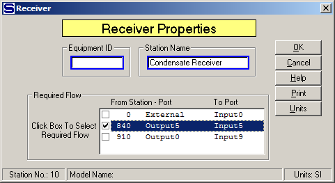

Equipment ID An equipment ID of up to 11 characters can be used to identify the station with an actual station in the process. Any combination of numbers and letters that are used in the factory/refinery to identify equipment can be entered. For example, Equipment ID = 123.456A. It is not necessary to make an entry in the Equipment ID field if the station in the model does not have a corresponding station in the factory/refinery.
Station Name A name of up to 20 characters must be entered for the station. For example, Station Name = 1st Vapor Receiver.
No input data is needed for a receiver station if its output flow is not a required flow. The input window merely allows for changing the name of the receiver.

A selection box will appear on the Receiver Properties window if the quantity of the output flow from the receiver is required by another station and more than one input flow into the station can be made required (see the above screen). Select the input flow to be required by left clicking the small box next to the flow. The selected flow will then be used by Sugars to satisfy the required output flow by adjusting the quantity of the input flow. The quantity of all other input flows into the receiver will be used first and the selected required input flow will then be adjusted to make the total quantity of all input flows equal to the quantity required by the output flow.